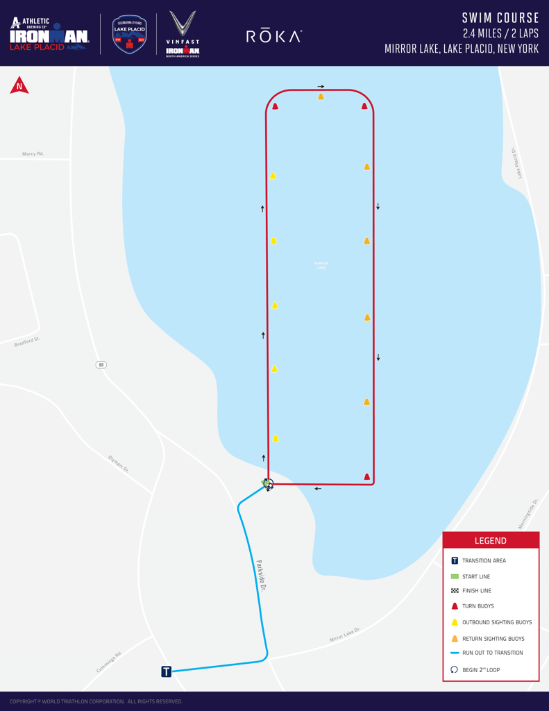
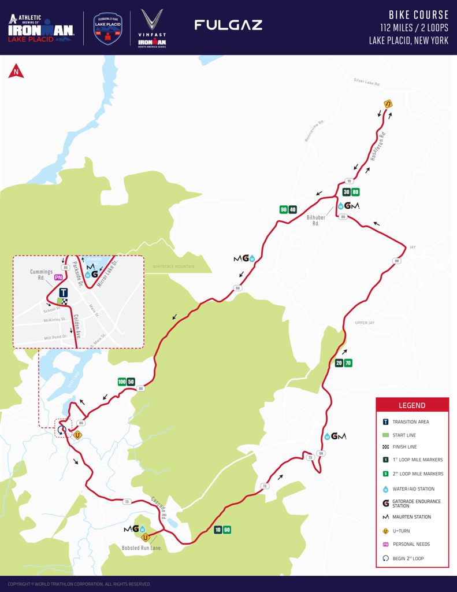
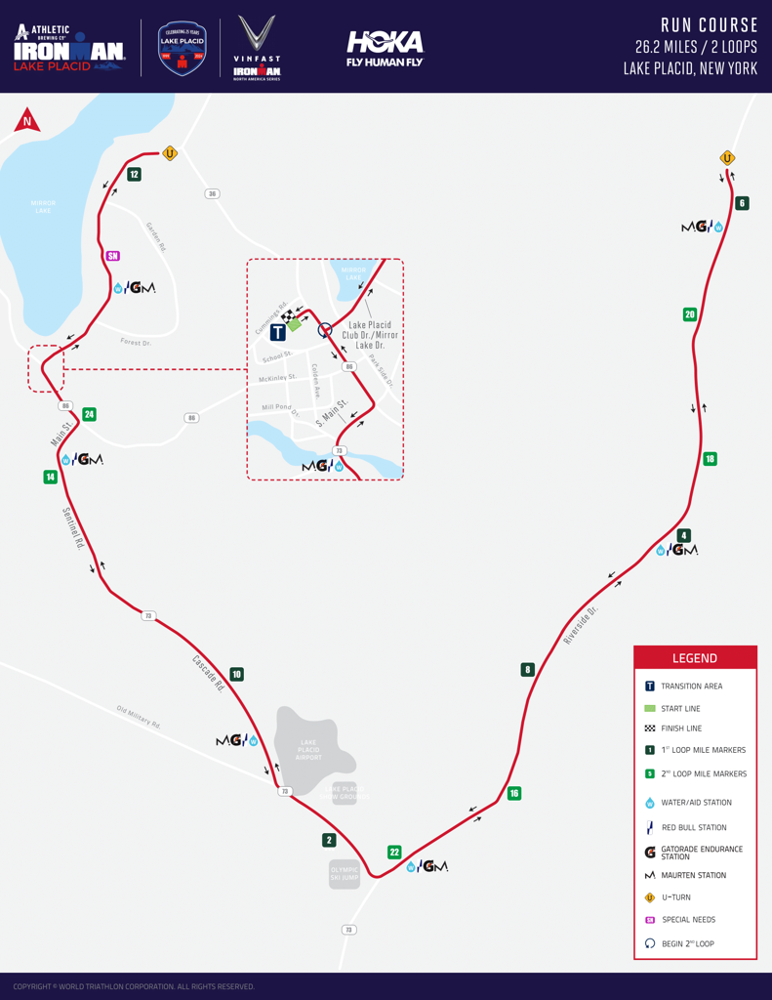

Introduction
My Ironman Journey
Welcome to my Lake Placid Ironman 2023 journey. This project documents my 6-month training and delves into the details of my improvement across 3 athletic events.
Total Training Days
0
Over 6 months
Hours Trained
0
~4 hours/day
Calories Burned
0
During training
Total Distance
0
Miles on race day
The Lake Placid Challenge
Swim Course - Mirror Lake

- 🏊♂️ Notes: Very beautiful sunrise as over 2000 athletes prepare for a long day ahead
- 💧 Two 1.2-mile loops
- 🌡️ Average water temp: 68-72°F
- ⏱️ Cut-off time: 2:20
Bike Course - Adirondacks

- 🚴♂️ Notes: Hilly roads with lots of speed on descents and effort on climbing - occasional downpours of rain made for a difficult section
- ⛰️ Elevation gain: 6,700 feet
- 🔄 Two 56-mile loops
- ⏱️ Cut-off time: 10:30
Run Course - Lake Placid

- 🏃♂️ Notes: Mild hills with large crowds cheering you on as you begin your final loop
- ⛰️ Elevation gain: 1,500 feet
- 🔄 Two 13.1-mile loops
- ⏱️ Cut-off time: 17:00
GENETIC ANALYSIS
This section delves into my genetic makeup based off SNP genotyping (via selfdecode). I was able to play around with the data and make a mock report by creating a in house SNP database based on specific genetic markers that influence athletic performance and attributing "scores" to each associated gene.
Genetic Performance Report
Scores were calculated by taking 20 known gene variations associated with athletic performance via scientific literature and comparing my own SNP data through normalized scoring. A future balanced score will be added to determine the overal flexibility of athletic performance.
2 = optimal score
1 = Neutral variant
0.5 = less than optimal variant
0.1 = Non-optimal variant
Athletic Genetics Overview
This detailed overview analyzes key genetic markers that influence athletic performance. The analysis includes the following:
1. Effect Size vs. Endurance/Power Bias: Show a mix of both power and endurance potential, with strong markers like ACTN3 favoring power and ACE favoring endurance performance
2. Distribution of Genentic Pathways: All genes analyzed have strong scientific backing, with evidence quality scores above 75%,
3. Evidence Quality by Gene: Most genes are involved in energy metabolism and muscle composition
4. Genes Ranked by Effect Size: ACTN3 and ACE have the strongest influence on athletic performance, with other genes providing moderate to significant effects
BODY COMPOSITION
This section explores how my body composition evolved throughout my Ironman training, with a focus on metrics like BMI, body fat percentage, lean mass, and cardiovascular indicators.
Body Fat %
0
Athletic Range
Lean Mass (kg)
0
Peak Training
Body Composition Analysis
Body Fat Percentage Trends
Trend analysis of body fat percentage - I still remember the mcdonalds nuggest and fries after - clearly had a little rebound after the event but cleaned up in the following weeks.
Body Mass Evolution
Trend analysis of body mass with added target weight - identical trend but nice to see weight in pounds
Body Mass vs Body Fat
Comparative analysis of body mass and body fat percentage relationships. Nothing out of order here.
Lean Body Mass Trends
Tracking of lean body mass changes during the same period. I noticed the loss of bodyfat but also the loss of muscle mass - I was considerably weaker throughout my lifts and in retrospect would add more lifting to training diet.
Pro Height Distribution Analysis
Height Distribution of pro triathletes.
Pro Body Mass Distribution
Weight Distribution of pro triathletes.
Pro Height vs Weight Analysis
Graph compares height and weight distributions between PRO triathletes sourced from (protriathletes.org - orange dots) and Rio 2016 Olympian triathletes (teal dots), showing a moderate positive correlation (R²=0.59) between height and weight, with most elite athletes falling within a specific range of proportions - in this case olympians from 2016 seem to weigh less on average than the PRO triatheltes (given that the PRO triathlete data was sourced as recently as 2024 I think there might be a trend towards slightly heavier triathletes in the future)
Cardiovascular Performance
Heart Rate by Activity
Analysis of heart rate patterns across different training activities. What I found that even though I was super out of breathing during swimming (poor technique plus inexperience) my heart rate was super low - this lead to me being in optimal fat burning range which explains that pretty fast drop from end of september to December where I was doing mostly swim training.
Also interesting to note here that my range of heart rate during my runs was larger than any other activity - I think I feel most comfortable with the variation I can give me run workouts as that's the activity I'm most familar with
Base Heart Rate Zones
Distribution of training time across base heart rate zones
Now this was super intersting for me to find out - I had initially calculated my heart rate zones with some website I found on the internet - only to find out there were multiple ways to calculate them after all the training.
Based of the MHR (maximum heart rate) calculator I used online I had a fairly optimal distribution of time spent in zone 1/2 (endurance focused)
However based on the Karvonen method I spent 76.8% of my time in Zone 1! I will definitely reassess my zone calculation for the next event
Basic MHR formula: MHR = 220 - Age
Targeted Heart Rate at 70% using Karvonen formula: THR = ((MHR - RHR) x 0.70) + RHR
Karvonen Heart Rate Zones
Karvonen heart rate zones in more dramatic bar graph fashion
MHR Heart Rate Zones
Maximum heart rate zones used during training
Time in Zones Analysis
Detailed breakdown of time spent in different heart rate zones
This is fun to see because you can zoom in week by week, month by month and see how long you were spending in a heart rate zone any given day - all the way to the right you can see the event day that essentially eclipses the entire graph
HRV Trends
Heart rate variability trends throughout training period.
Now let's get a litte more technical - plotted here is the rolling average of my HRV (heart rate variablity) over the course of roughly two years - with many more data points during the training cycle
What can be noticed are sharp ups and downs during those training periods - peaks corresponding to good recovery days and troughs to hard training days/inadequate recovery/possible accumulation of fatigue
Despite the volatility, the overall trend line (red dashed) continues its gradual decline - this is normal as the boody responds/adapts to progressive overload and potentially indicates a shift to a more sympathetic nervous system activity.
In the future I would love to incorporate more HRV monitoring during my training - gives me a good sense of exactly how hard was a hard workout and my recovery time - the goal is to really master the occasional super-compensation (higher than baseline) to find the best windows for peak performance
VO2 Max Trends
Progression of VO2 Max measurements during training
I would take this graph with alot of salt being that its coming from apple watch data - but it does show I normally have a stable VO2 max oof around 55ml/min/kg and the training shock lowered that to roughly 49ml/min/kg and then gradually improved
The classic "train-adapt-improve" cycle
Swim Performance
An analysis of my swim performance during the Ironman training, focusing on improvements in pace, distance, and technique.
Performance Metrics
Comparative metrics across swim training sessions.
Body Angle Analysis
Examination of body angle changes during swim sessions.
Wrist Angle Analysis
Examination of wrist angle changes during swim sessions.
DPS and SWOLF Trends
Analysis of DPS (Distance Per Stroke) and SWOLF (Swim Golf) trends over time.
Energy Expenditure
Correlation of calories burned with total swimming distance.
Stroke Analysis
Analysis of stroke count changes throughout training.
Stroke Count Timeline
Timeline of stroke count during swim sessions.
Interval Analysis
Breakdown of swim intervals by distance and stroke count.
Form Analysis 1
Key frame comparison for form analysis (session 1).
Form Analysis 2
Key frame comparison for form analysis (session 2).
Form Analysis 3
Key frame comparison for form analysis (session 3).
Form Analysis 4
Key frame comparison for form analysis (session 4).
Pace and Stroke Rate
Analysis of pace and average stroke rate over time.
Bike Performance
A deep dive into my biking sessions, covering distance, power, and cadence trends throughout training.
Activity Distribution
Overview of the distribution of biking activities throughout training.
Power Analysis
Analysis of average power output during biking sessions.
Correlation Analysis
Correlation matrix showing relationships between various biking metrics.
Training Stress Score
Cumulative Training Stress Score (TSS) over the training period.
Metric Distribution
Distribution of various biking metrics such as speed, power, and cadence.
Duration Analysis
Analysis of session duration distributions across different biking workouts.
Training Intensity
Progression of intensity factor (IF) over time to assess training load.
TSS Distribution
Distribution of Training Stress Score (TSS) across different sessions.
TSS Over Time
Trend of TSS and IF over the training period.
Weekly Load
Weekly distribution of training load, indicating volume and intensity.
Workout Comparison
Comparison of key metrics across different workout sessions.
Run Performance
This section focuses on my running performance, showcasing my progress in speed, endurance, and pacing strategies.
Running Analysis
Comprehensive analysis of running metrics, including speed, endurance, and pacing.
Heart Rate and Cadence
Tracking heart rate and cadence variations over time during runs.
Pace Analysis
Analysis of pace trends and distance over the training period.
Weekly Distance
Weekly mileage progression, highlighting endurance improvement.
Diet & Sleep Analysis
This section covers the impact of my diet and sleep on my overall training performance and recovery.
Average Calories Consumed
0
Macronutrient Distribution
Analysis of macronutrient intake distribution over the training period.
Weight and Calories
Correlation between weight changes and calorie intake over time.
Sleep Analysis
Detailed analysis of sleep patterns and their impact on recovery.
Final Thoughts
My Ironman Journey
Looking back on training the data reflects a story of gradual progress and adaptation - understanding the process will be key in my future races - Thanks for joining
Total Training Days
0
Over 6 months
Hours Trained
0
~4 hours/day
Calories Burned
0
During training
Total Distance
0mi
Race day goal